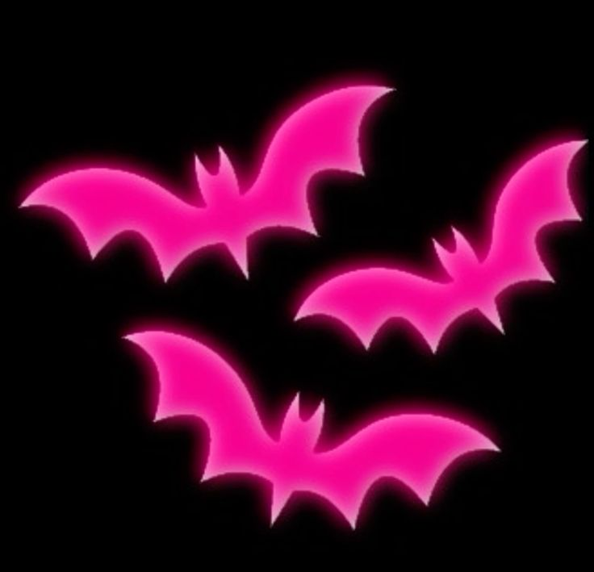

Meus projetos
Minha Biblioteca: séries e filmes

Site para treinar
Um jogo interativo para explorar decisões e caminhos diferentes.
Alurasong
Um site inspirado na Netflix com músicas.
Eu sou Pedro Bilche
Eu estudo na escola durante o dia e à noite faço curso pré-vestibular na UNESP
Minhas habilidades
Um jogo interativo para explorar decisões e caminhos diferentes.
Um site inspirado na Netflix com músicas.